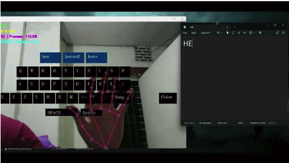

Vision-based Hand Gesture Virtual Keyboard-Mouse
Vision-based hand-gesture virtual keyboard-mouse with bilingual (English/Bangla) LSTM next-word prediction — a low-latency touchless text-entry system (IEEE, JCSSE 2026).
One hand, two modes
Illustrative example
Authored walk-through of the documented pipeline. It shows how the system works, not recorded results.
Overview
Touchless typing tends to trade off against itself: enough gestures to be useful and it gets confused by lighting or hand shape, fast enough to feel responsive and it drops accuracy, or it supports one language and locks out Bangla speakers. This project (IEEE JCSSE 2026) builds one real-time pipeline that handles keyboard typing, mouse control and bilingual English/Bangla next-word prediction from a plain USB webcam, with no wearable hardware.
Approach
Gesture recognition is deliberately non-probabilistic: MediaPipe extracts 21 hand landmarks per frame, and each finger's extension state is read directly from the ratio of fingertip-to-base versus base-to-palm distance, packed into a 4-bit code — cheap enough to classify in under 0.03 ms. Nine gestures cover both interaction modes: a sustained 'v' drives the mouse cursor, grab/open-hand/click gestures handle clicks and drag-and-drop, and a debounced 'pinky-down' registers keyboard keystrokes. Typed text is completed by a two-layer LSTM (128 units, 64-dim embeddings) trained separately on English (Project Gutenberg) and Bangla (Kaggle) corpora, with automatic language detection switching between them and HarfBuzz/PyQt5 handling correct Bangla glyph rendering.
Results
All nine gestures were recognized at ≥97.3% accuracy (100% for grab and open-hand) across five hardware platforms — from a 4th-gen Intel i5 to an Apple M2 — sustaining up to 37.7 FPS. The English LSTM reached 97.0% top-1 accuracy (perplexity 1.15) and Bangla 97.2% (perplexity 1.10), giving character error rates of 3.43% and 8.34% respectively. A seven-condition lighting sweep (50–2000 lux, including backlit and flickering light) held accuracy above 90% throughout, with only a 6.6-point drop in the worst case — the robustness prior single-condition systems in this space were missing.
Highlights
- Hand Gesture Recognition
- Bilingual Prediction
- Touchless Interface
Tech stack & key skills
Core tools, methods and skills demonstrated in this project: